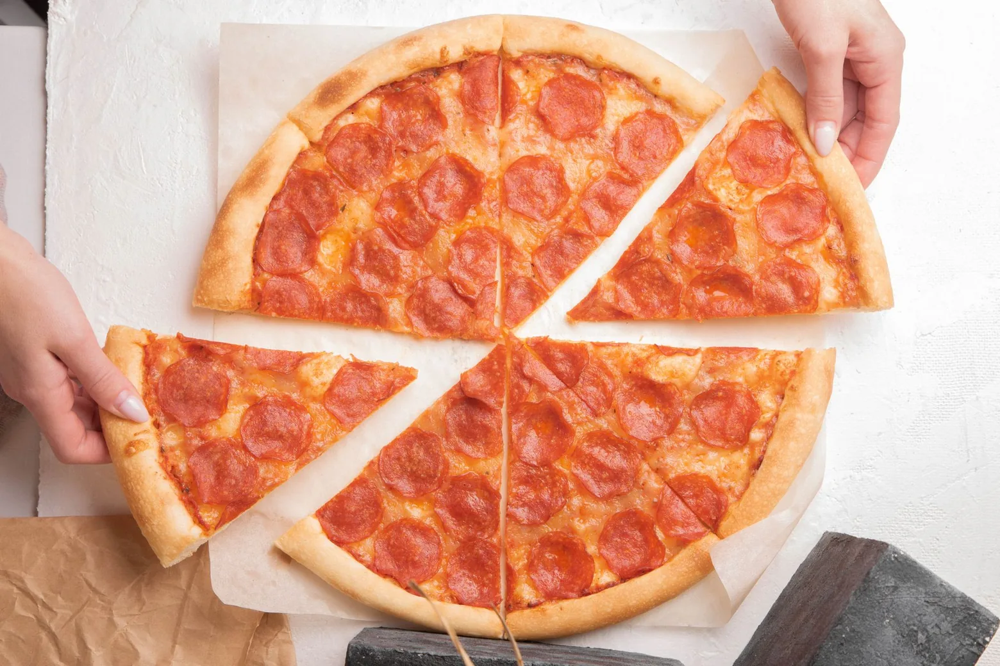

Whitestone, Queens
Cascarino’s
Brick Oven Pizzeria
& Ristorante
A Grandma square at the counter. A pie to take home. Pasta for the whole table.

Cascarino’s catering
Feeding
a crowd?
Call the shop for help choosing trays, figuring out portions and arranging pickup.
Call about cateringCASCARINO’SCATERING
- Antipasti & salads
- Baked pasta trays
- Italian entrées
- Heroes by the foot
Find the shop
Come by.
152-59 10th AvenueWhitestone, NY 11357
See Toast for current pickup and delivery hours. Call the shop for dine-in and holiday hours.